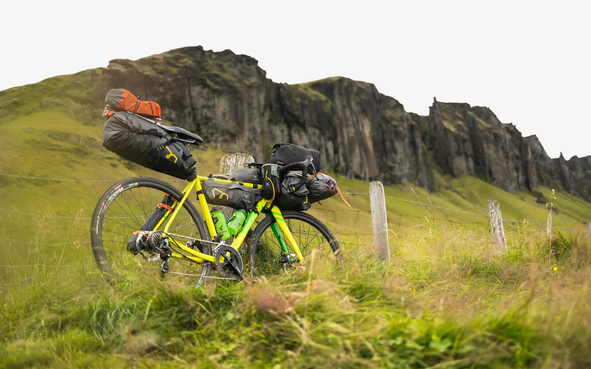

Bikepacking 101
Bikepacking isn't about comfort. It’s about stripping away everything you don't need until all that’s left is you, your rig, and the dirt in front of you. When you’re 80 miles deep into a route with no cell service and a headwind that won't quit, your gear isn't just equipment—it's survival. Here is our protocol for getting out there and making it back.
01 // THE RIG
Run what you brung, but know the limits.
You don't need a bespoke titanium rig to start, but you do need reliability. Clearance for at least 40mm tires is mandatory if you value your wrists on washboard descents. Keep the gearing stupidly low—when your bike weighs 55lbs fully loaded, you will be begging for a 1:1 bail-out gear on a 15% pitch. Check out our Ti vs Carbon Showdown to see what frame handles the abuse best.
02 // THE LOADOUT
Ounces equal pounds, and pounds equal pain.
Ditch the heavy panniers and racks. Modern bikepacking relies on a holy trinity: Handlebar roll, frame bag, and seat pack. Brands like Tailfin and Revelate Designs have perfected stability. Put your dense, heavy items (tools, water, stove) in the frame bag to keep the center of gravity low. Shove your lightweight, compressible gear (sleeping bag, puffy jacket) into the seat pack. If it doesn't fit in the bags, you don't need it. Leave the camp chair at home.
03 // THE ROUTE
Failing to plan is planning to bail.
Don't make your first trip a 3-day epic across the divide. Start with a sub-24-hour overnight (S24O). Plot 30 to 40 miles to a local campsite using Komoot, test your sleep system, and figure out exactly what rattles loose on the dirt. Download the GPX to a dedicated head unit, and always keep an offline map on your phone. Out here, a wrong turn costs you daylight and calories. Ready to suffer? Try tackling The Neon Divide.
View All High-Grit Gear Reviews